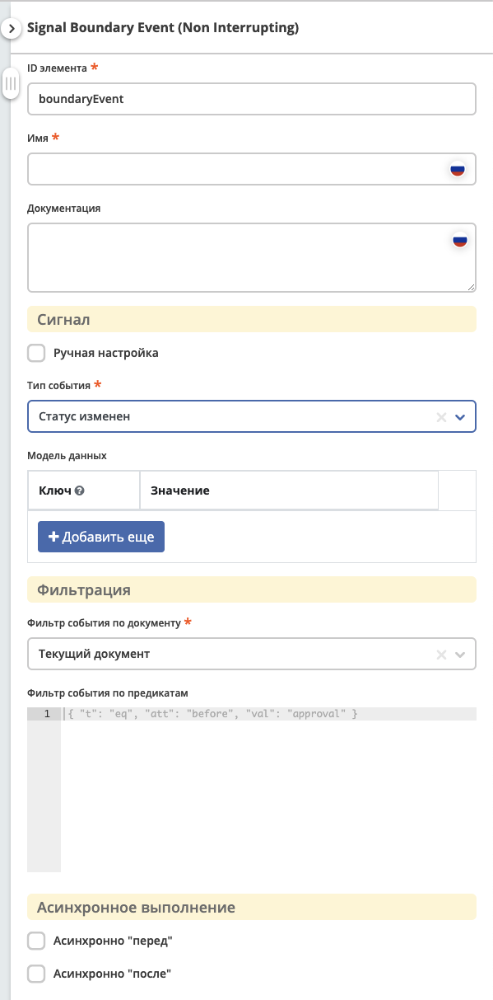
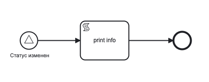
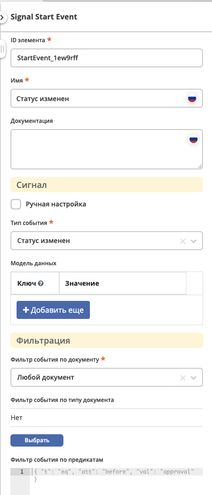
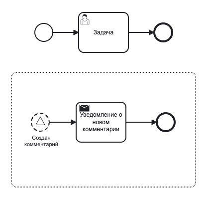
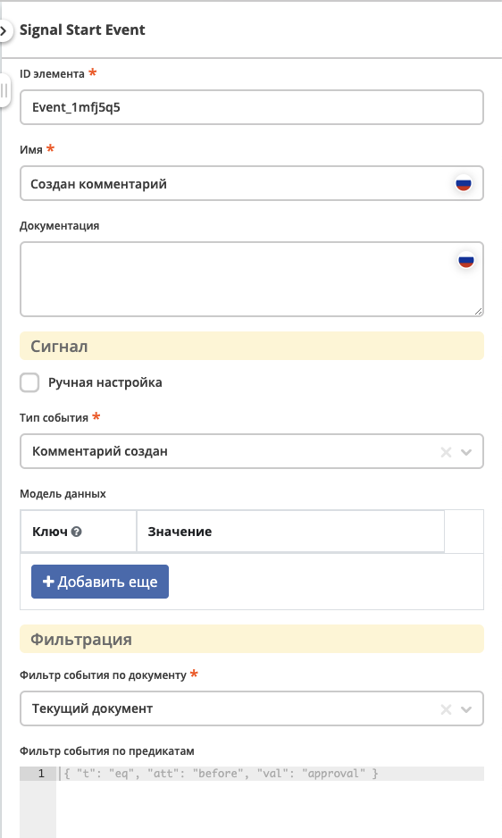
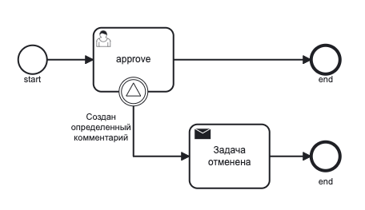
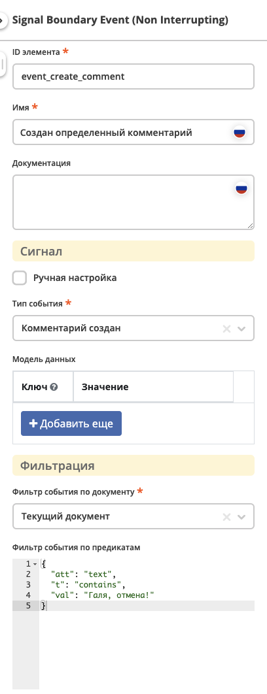
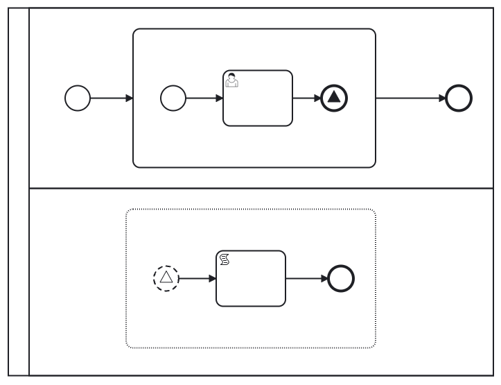
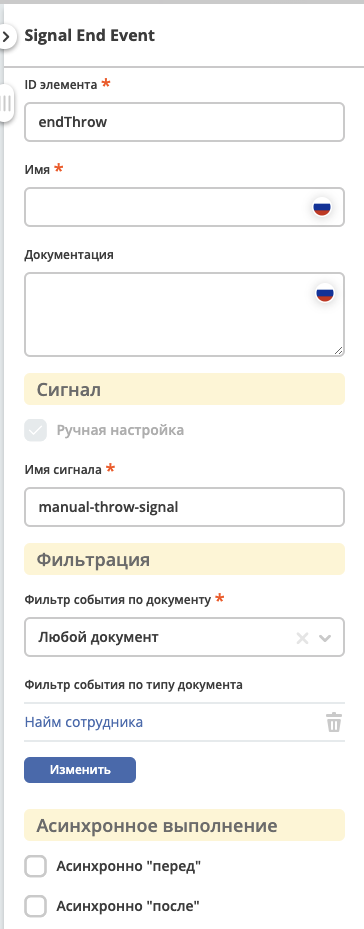
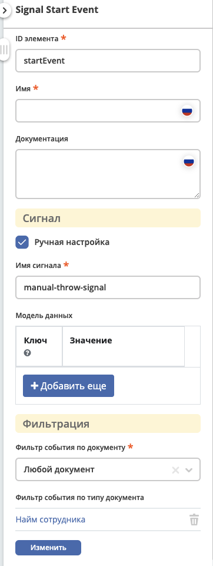

События (Сигналы)
Содержание
События сигнала — это события, которые ссылаются на именованный сигнал.
Сигнал — это событие глобального масштаба (broadcast semantics), которое доставляется всем активным обработчикам.
Throw и Catch сигналов происходит по его имени.
BPMN Сигналы используются для интеграции Событий ECOS
Определение событий (сигналов)
Форма
{kind=link}
Атрибуты
Ручная настройка |
Флаг, который позволяет переключить настройку сигнала в ручной режим - указание имени сигнала, а не выбор из предустановленных типов событий. |
Имя сигнала |
Служит для идентификации сигнала.
Данное поле становится доступно если включена опция
Ручная настройка.Если выбран
тип события, то имя генерируется автоматически. |
Модель данных |
Каждое событие имеет свою полезную нагрузку (payload).
Например, событие
Статус изменен содержит информацию о новом и предыдущем статусе.Модель данных представляет собой
map, где ключ - это имя атрибута, по которому будет доступно вычисленное значение, а значение - это Records API атрибут.Таким образом, модель данных позволяет указать какие данные будут передаваться в сигнале, при этом пользовательская модель данных имеет высший приоритет над payload по умолчанию.
|
Фильтр события по документу |
Позволяет отфильтровать события на основе документа, по которому возникает данное событие.
Поле имеет 3 значения:
|
Имя переменной |
Поле становится доступно, если в
Фильтр события по документу выбрано значение Документ из переменной процесса.В данном поле указывается имя переменной процесса, по которой будет определяться документ, для которого будет возникать событие.
Переменная должна содержать EntityRef документа в виде String.
|
Фильтр события по предикатам |
Используется для фильтрации catch событий.
Моделью для вычисления предиката является payload события. B предикатах можно ссылаться на атрибуты из payload события через
{{someAttribute}}. Если атрибут используется только в предикате, то его можно испоьзовать напрямую без объявления в модели. |
Payload событий
{
"_meta": {
"id": "0944c87d-7d4a-482f-881a-3b84ec9b740d",
"type": "record-status-changed",
"time": 1670576506017,
"user": "system"
},
"record": "emodel/hr-person@7d2455c4-26b5-408a-913c-6affd9eb3a19",
"recordType": "emodel/type@hr-person",
"before": "prepare",
"after": "fill-data"
}
Payload по умолчанию для всех событий
Каждое событие имеет payload по умолчанию, который содержит:
_meta- мета информация о событии. Содержит:id- уникальный идентификатор события (UUID)type- тип события (String)time- время возникновения события (Instant)user- username пользователя, который вызвал событие (String)
record- документ по которому произошло событие (EntityRef)recordType- тип документа по которому произошло событие (EntityRef)
Примечание
По соглашению, каждое событие должно содержать атрибут record в виде EntityRef. Если событие не содержит этого поля, то фильтрация по документу не будет работать.
Payload по умолчанию для предопределенных событий
Record создан
Дополнительная модель отсутствует.
Record удален
Дополнительная модель отсутствует.
Record изменен
before- атрибуты до изменения (Map<String, Any>)after- атрибуты после изменения (Map<String, Any>)diff- объект описывающий изменения (Diff)list- список изменений (List<DiffValue>), например diff.list?jsonhas- предоставляет возможность проверить был ли изменен атрибут (Boolean), например diff._has.youAttName?bool
Статус изменен
before- статус до изменения (StatusValue)after- статус после изменения (StatusValue)
StatusValue содержит следующие атриубуты:
id- идентификатор статуса (String)name- имя статуса (MLText)
по умолчанию возвращается в виде id.
Комментарий создан
text- текст комментария (String)commentRecord- рекорд созданного комментария (EntityRef)
Комментарий изменен
textBefore- текст комментария до изменения (String)textAfter- текст комментария после изменения (String)commentRecord- рекорд созданного комментария (EntityRef)
Комментарий удален
text- текст удалленого комментария (String)commentRecord- рекорд удаленного комментария (EntityRef)
Использование payload события в Script Task
После возникновениия события, его payload доступен в переменной event в рамках текущей транзакции. Если необходимо сохранить какую-то информацию из payload в execution процесса, то это можно осуществить через обычное сохранение переменных в execution.
Переменная event, это класс-обертка BpmnDataValue, который позволяет удобно работать с json представлением данных - безопасно обращаться к полям, получать значения по умолчанию, приводить к нужному типу и многое другое, подробнее см. методы класса.
Пример использования payload в скрипте:
print("---HELLO FROM SCRIPT---");
print("event id from base: " + event.get("_meta").get("id"));
print("event id from $: " + event.get("$._meta.id"));
print("event id from JsonPointer: " + event.get("/_meta/id"));
print("event time as instant: " + event.get("/_meta/time").takeAsInstant());
print("event field names list: " + event.fieldNamesList());
print("call undefined prop is safe: " + event.get("/_meta/a/b/c/"));
print("event id is boolean " + event.get("_meta").get("id").isBoolean());
print("-------END--------------");
Результат выполнения скрипта:
---HELLO FROM SCRIPT---
event id from base: "5cf00981-6da6-414e-a82f-d0320f91f7a4"
event id from $: "5cf00981-6da6-414e-a82f-d0320f91f7a4"
event id from JsonPointer: "5cf00981-6da6-414e-a82f-d0320f91f7a4"
event time as instant: 2022-12-09T14:17:24.027Z
event field names list: [text, commentRecord, docDisp, myText, myText2, _meta, record, recordType]
call undefined prop is safe: null
event id is boolean: false
-------END--------------
Примеры конфигураций событий
Start Event - старт процесса
При изменении статуса по любому документу будет запущен процесс, который выполнит скрипт.
 {kind=link}
{kind=link}
Start Event - старт событийного подпроцесса
Каждый раз при создании комментария по текущему документу, пока основной процесс активен, будет запущен подпроцесс, который отправит уведомление.
 {kind=link}
{kind=link}
Bondary Event - событие с предикатом
При активной задаче, если был добавлен комментарий, который содержит текст «Галя, отмена!», то задача будет отменена и отправлено уведомление.
 {kind=link}
{kind=link}
End Throw Event - ручная настройка и события с фильтрами
При завершении подпроцесса сработает signal end event и будет сформировал сигнал с именем «manual-throw-signal» с фильтрацией - любой документ, тип «Найм сотрудника». При этом запустится событийный подпроцесс, так как он подходит по названию сигнала, документу и типу документа.
  {kind=link}
{kind=link}
{kind=link}
Intermediate Catch Event - событие с пользовательской моделью и предикатом с expression
Создается задача, в результате которой, пользователь определяет, комментарий с каким текстом нужно удалить, текст комментария сохраняется в переменную документа textForDelete.
После выполнения задачи процесс ожидается события Комментарий удален по текущему документу и предикатом, который проверяет, что текст удаленного комментария совпадает с текстом переменной delText, которая определена в модели данных и ссылается на атрибут документа.
{kind=link}
Если атрибут используется только в предикате, то его можно не объявлять в модели, а использоваться напрямую, таким образом, пример выше можно упростить до:
{
"t": "eq",
"att": "text",
"val": "{{record.textForDelete}}"
}